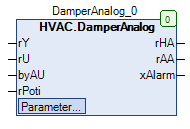

DamperAnalog (FB)¶
FUNCTION_BLOCK DamperAnalog
Short Description¶
Control of a continuous damper actuator with continuous position feedbackTypical application: Continuous recirculation damper of a HVAC system
Portrayal¶

Interfaces¶
Inputs¶
Name Datatype
Range
Init-Value
Function
rY REAL Setpoint value
rU REAL 0.0 Actual value - Position
eAO HVACTYPES.eManNum HVACTYPES.eManNum.Auto, HVACTYPES.eManNum.Man HVACTYPES.eManBin.Auto Operating mode of manual override - Hardware
rPoti REAL 0.0 Manual override value - Hardware
Outputs¶
Name Datatype
Range
Init-Value
Function
rHA REAL Control signal Damper actuator after manual override
rAA REAL Control signal Damper actuator before manual override
xAlarm BOOL Fault message
Setpoints / Parameters¶
Name Datatype
Range
Init-Value
Function
udiControlTime UDINT 10s ... 600s 150s Signal delay of position monitoring
rControlDiff REAL 7.0 Maximum deviation between target and actual position value
xControl BOOL TRUE Enabling position monitoring
rManValue REAL 0.0 Manual value
eManModeN eMANNUM eMANNUM.Auto, eMANNUM.Man eMANBIN.Auto Manual override mode
Functional description¶
Actuator signal Damper actuator before manual override rAA¶
Control signal Damper actuator after manual override rHA¶
rAA eManModeN rHA Notes
X eMANNUM.Auto rAA Manual override module in automatic mode
X eMANNUM.Man rManValue Handübersteuermodul in Handbetrieb
xAlarm collective fault¶
Visualization¶
Information¶
Element Authors
Date
Version Note
Function
Alexander Halter 09.2016 1.0 Initial version
Programming
Alexander Halter 09.2016 1.0 Initial version
Test Jochen Reu 11.2017 1.0 Initial version
Documentation
Jochen Reu 11.2017 1.0 Initial version
Codesys¶
- InOut:
Scope Name Type Initial Comment Input rY REAL Setpoint value
rU REAL 0 Actual value - Position
eAO eManNum HVACTYPES.eManNum.Auto Operating mode of manual override - Hardware
rPoti REAL 0 Manual override value - Hardware
Output rHA REAL Control signal Damper actuator after manual override
rAA REAL Control signal Damper actuator before manual override
xAlarm BOOL Fault message
Input udiControlTime UDINT 150 Signal delay of position monitoring
rControlDiff REAL 7 Maximum deviation between target and actual position value
xControl BOOL TRUE Enabling position monitoring
rManValue REAL 0 Manual value
eManModeN eMANNUM eMANNUM.Auto Manual override mode